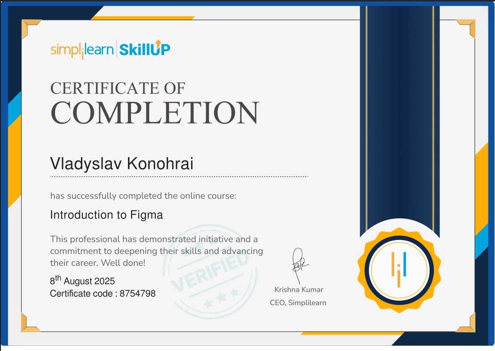
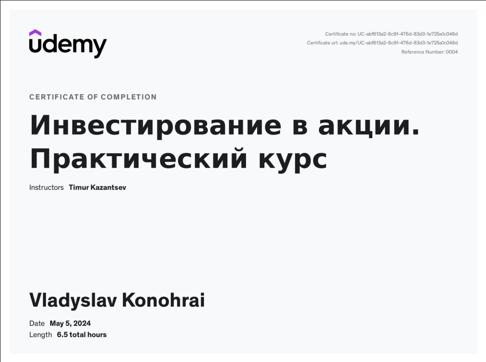
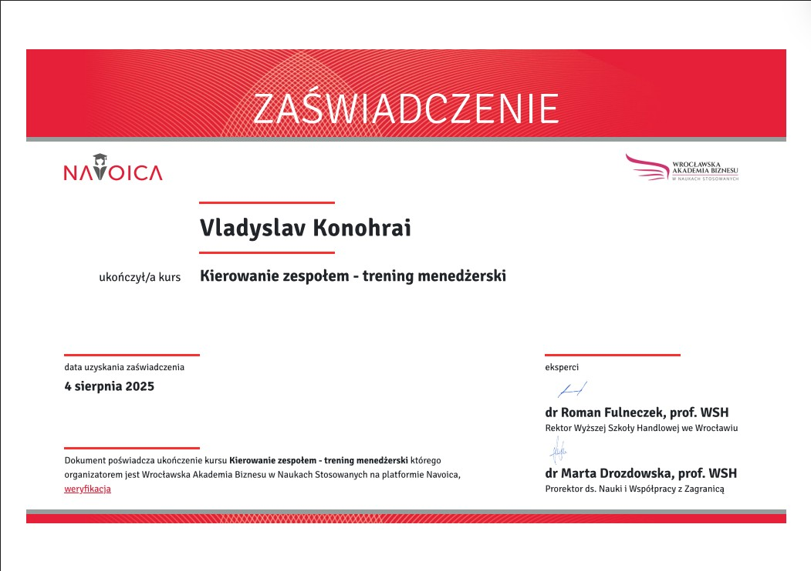
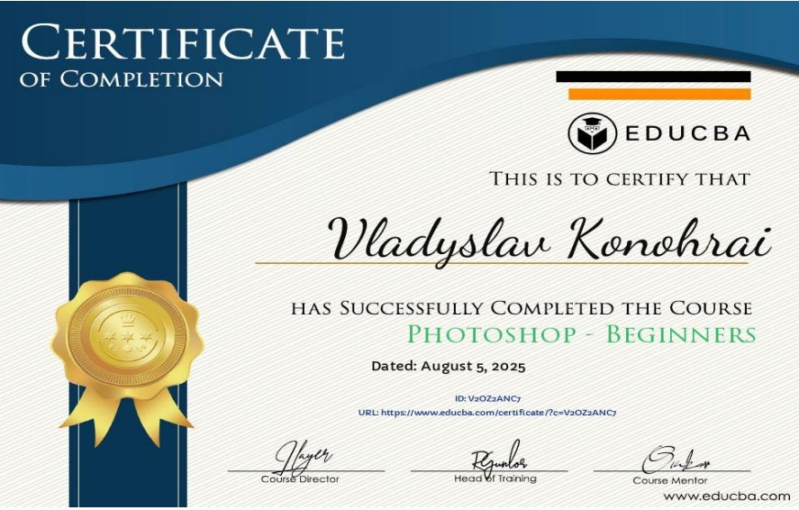
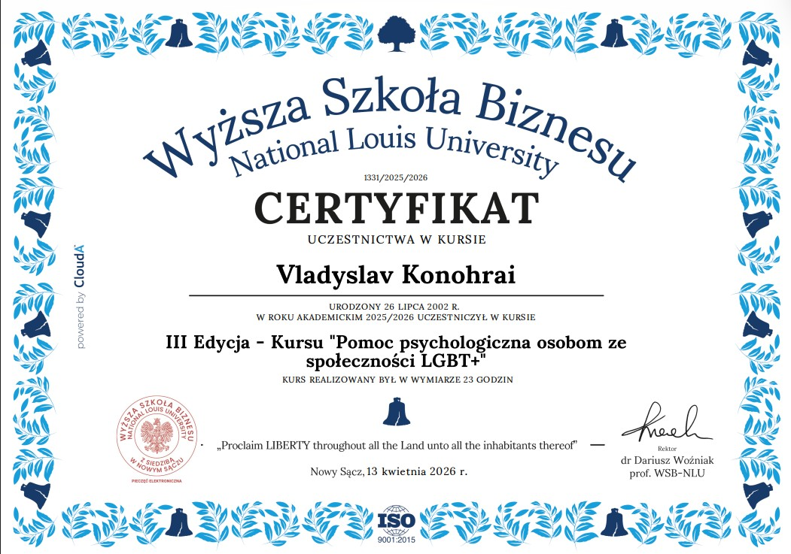
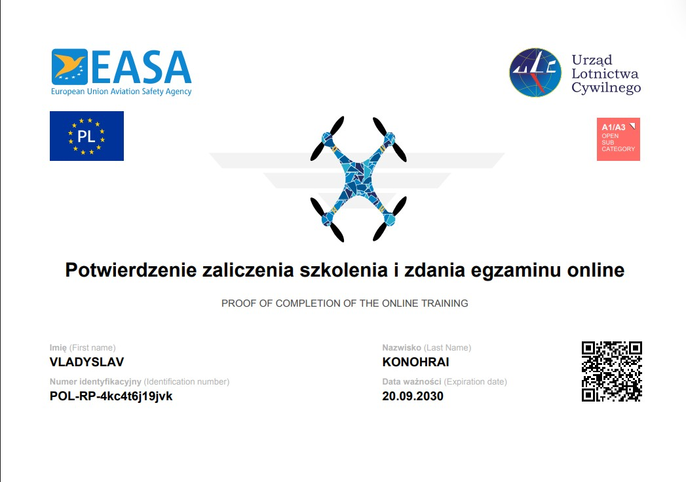
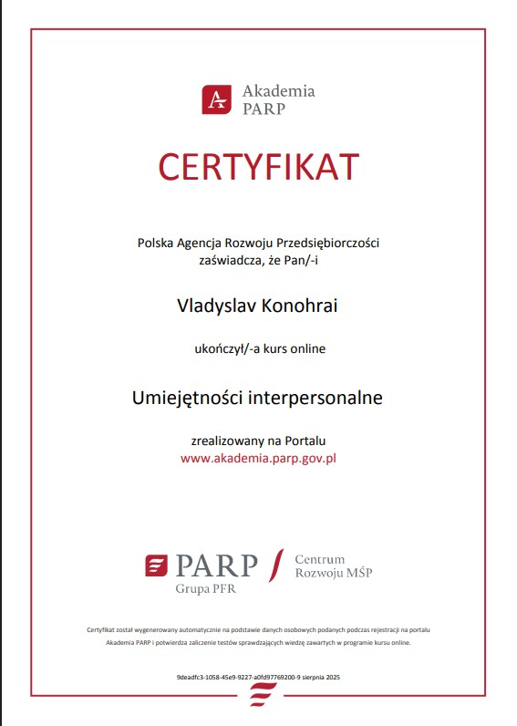

PL
EN
RU
Pobierz CV
PSYCHOLOGY STUDENT • SAFETY SPECIALIST
Vladyslav Konohrai
Understanding people.
Student psychologii z doświadczeniem w pracy fizycznej, obsłudze klienta
oraz w obszarze BHP. Motywuje mnie nauka, odpowiedzialność i rozwój.
5+ lat doświadczenia
3 kierunki edukacji
5 języków
10+ certyfikatów
Psychology
Leadership
Analysis
Safety
01
Bezpieczeństwo pracy
Dokumentacja, szkolenia i praktyczne podejście do procedur BHP.
02
Praca z ludźmi
Komunikacja, obsługa klienta i wsparcie zespołu w codziennych zadaniach.
03
Analiza i porządek
Uważność na detale, szybka adaptacja i odpowiedzialność za wynik.
MÓJ PUNKT DROGI
Droga, która mnie
ukształtowała
Każde doświadczenie było krokiem naprzód.
Od pracy fizycznej przez przemysł, aż do
psychologii i bezpieczeństwa pracy.
Dziś łączę wiedzę o człowieku z dbałością
o bezpieczeństwo i rozwój.
Poznaj moją historię
2019
Budownictwo
Pierwsze doświadczenie w pracy fizycznej i na budowie.
2020
Farma
Praca w gospodarstwie, opieka nad zwierzętami, dyscyplina.
2022
Przemysł
Lakierowanie, organizacja pracy i zarządzanie zespołem.
2024
Specjalista BHP
Odpowiedzialność za bezpieczeństwo, szkolenia i procedury.
2024+
Psychologia
Rozwój wiedzy o człowieku, motywacji i komunikacji.
Moje mocne strony
Organizacja
Praca pod presją
Obsługa klienta
Rozwiązywanie
Szybka nauka
Odpowiedzialność
Uprawnienia
Praca zespołowa
Zakres współpracy
Co wnoszę do zespołu
Łączę praktyczne doświadczenie z BHP, pracą operacyjną i psychologicznym spojrzeniem na ludzi.
Procedury i dokumentacja
Wsparcie w tworzeniu dokumentacji, analizie zagrożeń i porządkowaniu zasad pracy.
Komunikacja z zespołem
Spokojna praca z ludźmi, wyjaśnianie zasad i budowanie odpowiedzialności.
Organizacja stanowiska
Praktyczne spojrzenie na proces, ergonomię, jakość i codzienną efektywność.
Rozwój i nauka
Szybkie uczenie się, zbieranie informacji i przekładanie wiedzy na działanie.
Doświadczenie
Inspektor ds. BHP
SOL-WORK Tetiana Logvyn
10.2024 – obecnie
Dokumentacja BHP
Szkolenia pracowników
Analiza zagrożeń
Wdrażanie procedur
Pomocnik lakiernika
Palfinger Poland Sp. z o.o.
06.2022 – 08.2024
Przygotowanie i lakierowanie
Śrutowanie elementów
Organizacja pracy działu
Szkolenie pracowników
Pracownik restauracji
Wojciech Szpila Sp. z o.o.
09.2023 – 12.2023
Obsługa klienta
Zarządzanie zapasami
Praca w kuchni
Szkolenie zespołu
Pracownik restauracji
Happy Food AWK Sp. z o.o.
08.2025 – 11.2025
Realizacja zamówień
Obsługa kasy i klientów
Praca pod presją czasu
Kontrola jakości
Pomocnik budowlany
Ukraina
04.2019 – 12.2019
Prace budowlane
Montaż rusztowań
Prace żelbetowe
Wykończenia wnętrz
Edukacja
Psychologia Uniwersytet Mikołaja Kopernika w Toruniu
Asystent stomatologiczny Szkoła Policealna MEDICUS
Technik BHP Szkoła Policealna MEDICUS
Osiągnięcia i certyfikaty
Dyplomy i certyfikaty
Zobacz wszystkie dyplomy
Pełna galeria certyfikatów i zaświadczeń potwierdzających moje kwalifikacje.
01 / 08
Excel for Beginners Certificate
Certyfikat ukończenia kursu podstaw Excela.
Otwórz dyplom







“
Najważniejszy zasób każdej organizacji to ludzie.
VK
Wyrażam zgodę na przetwarzanie moich danych osobowych zawartych w CV na potrzeby obecnej oraz przyszłych rekrutacji, zgodnie z RODO.